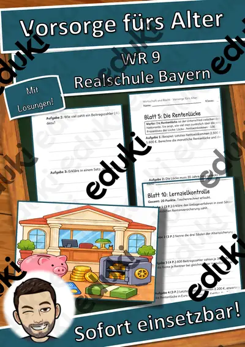
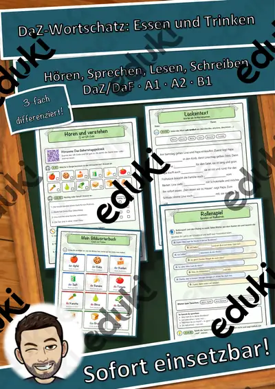
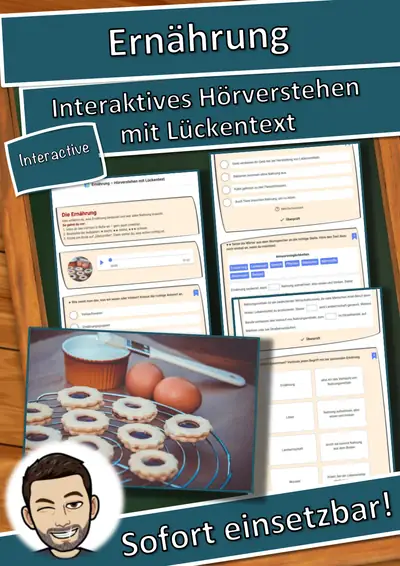

Sport und Ernährung – Energie fürs Training – Lesespurgeschichte mit Rätselaufgaben (Klasse 9)
Sport und Ernährung – Energie fürs Training – Lesespurgeschichte Sport (Klasse 9)Schick deine Klasse auf eine Lesespur durch die Mensa einer Jugendsportschule! „Im letzten Spiel war ich nach der Halbzeit total leer“, sagt Okan – und Milena hatte vor Nervosität gar nichts gegessen. Beim Trainingslager ihrer Schul-Basketballmannschaft zeigt ihnen die Ernährungsberaterin Frau Jankowski, wie Essen, Trinken und Training zusammenpassen. An der Infowand geht es um den Energiebedarf im Wachstum, am Nudelbuffet um Kohlenhydrate und Glykogenspeicher, an der Eiweißtheke um die Reparatur der Muskeln und an der Salatbar um Vitamine und Mineralstoffe. Am Snackregal und an der Uhrenwand wird das richtige Timing geklärt, an der Trinkstation das Trinken vor, während und nach dem Sport. An der Mythenwand werden verbreitete Behauptungen zu Pulvern, Pillen und Hungern vor dem Wettkampf geprüft. Zum Schluss bereiten die beiden ein Spieltag-Frühstück zu und essen mit dem ganzen Team. Die Stoff-Banane Nana ist immer dabei. Am Ende jedes Abschnitts verrät ein Hinweis den nächsten Ort auf dem Plan – nur wer genau liest, findet den Weg und sammelt alle geheimen Buchstaben zum Lösungswort.
Die perfekte Lesespur für den SPORTUNTERRICHT der 9. Klasse – ideal für Sporttheorie, Gesundheitsthemen, Vertretungsstunden oder als Einstieg in eine Trainingsplanung: Sie verbindet sinnentnehmendes Lesen mit sportbezogenem Ernährungswissen – sachlich, ohne Diät- oder Kalorienfokus und ohne Werbung für Produkte. Das Material ist SOFORT EINSETZBAR und in DREI DIFFERENZIERUNGSSTUFEN (leicht ★ / mittel ★★ / schwer ★★★) angelegt.WICHTIG: Das komplette Material ist sowohl in FARBE als auch in SCHWARZ-WEISS enthalten – ideal zum Sparen von Druckkosten.DAS IST ENTHALTEN
- Lesespurgeschichte in 3 Niveaus (leicht, mittel, schwer)
- farbiger Mensaplan als Suchkarte
- Hörverstehen mit QR-Code zur MP3 (selbstständiges Hören mit Kopfhörern)
- vier Aufträge auf dem Weg: ein Quiz, eine Zuordnung, eine Rechenaufgabe und ein Steckbrief
- Rätselseite (Wörter-Suchsel + Fragen zum eigenen Trainingstag)
- Ausmalbild zum Thema (gemeinsames Teamessen nach dem Training)
- ausführliches Lösungsblatt für die Lehrkraft
- alles zusätzlich als komplette Schwarz-Weiß-VarianteSO GEHT DIE LESESPURDie Jugendlichen lesen ab START, finden im Text den nächsten Ort, suchen ihn auf dem Plan und lesen bei dieser Station weiter. An jeder richtigen Station gibt es einen Buchstaben. Eingeplante Sackgassen (Tablettwagen, Garderobe, Mülltrennung, Pflanzkübel) sind keine Stationen und dienen der Selbstkontrolle. Am Ende werden die gesammelten Buchstaben umgestellt und ergeben ein geheimes Lösungswort. (Die Lösungen sind selbstverständlich nur im Lösungsblatt für die Lehrkraft enthalten.)INHALTLICHER SCHWERPUNKTEnergiebedarf (Grund- und Leistungsumsatz, Wachstum), Kohlenhydrate als wichtigster Treibstoff und Glykogenspeicher, Eiweiß zur Regeneration (mit normalen Mahlzeiten gedeckt), Vitamine und Mineralstoffe (Eisen, Magnesium, Calcium), Snack vor dem Training, Trinken vor, während und nach dem Sport, Energydrinks, zeitliche Planung von Mahlzeiten, Mythen zu Nahrungsergänzung und Hungern, keine verbotenen Lebensmittel, Spieltag-Frühstück, Erholung durch Essen und Schlaf.ABGEDECKTER LEHRPLAN (Klasse 9, Sport)
- Sport (LehrplanPLUS Bayern) – Jahrgangsstufe 9 „Gesundheit und Fitness“: gesundheitsbewusstes Verhalten in Verbindung mit Training und Wettkampf, Ernährung und Flüssigkeitszufuhr beim Sport.
- Deutsch – Lesen: Sachtexten gezielt Informationen entnehmen und Behauptungen kritisch prüfen; Zuhören: einem Sachhörtext folgen (Hörverstehen mit MP3).
- Mathematik – Zeitspannen, Division, Prozentrechnung.
- Fächerübergreifend / Kompetenzen: Gesundheits- und Verbraucherbildung (Mythen und Werbeversprechen hinterfragen), Biologie (Nährstoffe, Energie), Teamgeist.
Geeignet für Freiarbeit, Stationenlernen, Vertretungsstunden, Wochenplan, Projekttage, Sporttheorie bei Hallenbelegung und Distanzunterricht. Klassenstufe 9.
Ähnliche Materialien

Energie Lückentext mit Wortspeicher Hörverstehen und Suchsel

Kohlenhydrate Lückentext mit Wortspeicher Hörverstehen und Suchsel

Organspende – eine Entscheidung fürs Leben – Lesespurgeschichte mit Rätselaufgaben (Klasse 7)

Vorsorge fürs Alter – Arbeitsheft mit Lösungen (WR 9, Realschule Bayern)

DaZ-Wortschatz Essen und Trinken – differenziert A1/A2/B1: Hörszene (QR), Lückentexte, Rollenspiel

Kalte Küche fürs Klassenbuffet – Salate, Dips und Brotaufstriche – Lesespurgeschichte mit Rätselaufgaben (Klasse 7)

Energie und Arbeit – Prüfungstraining Physik (Klasse 9)
